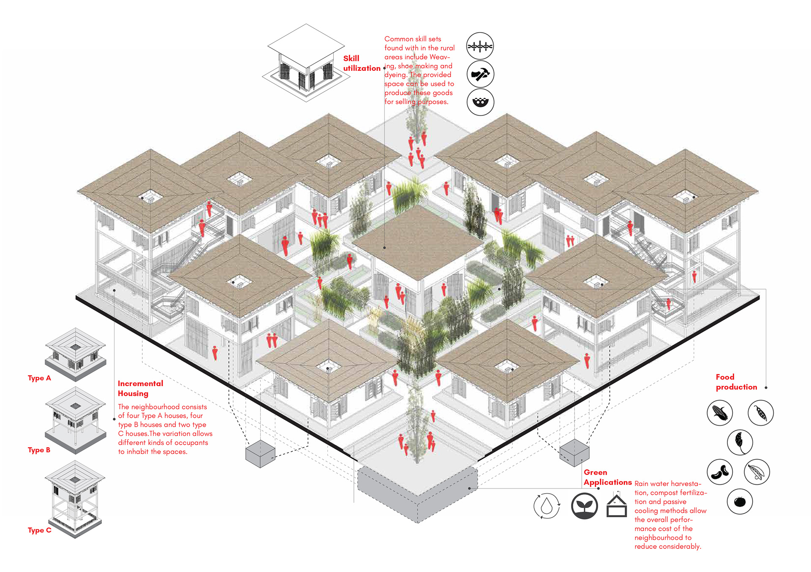
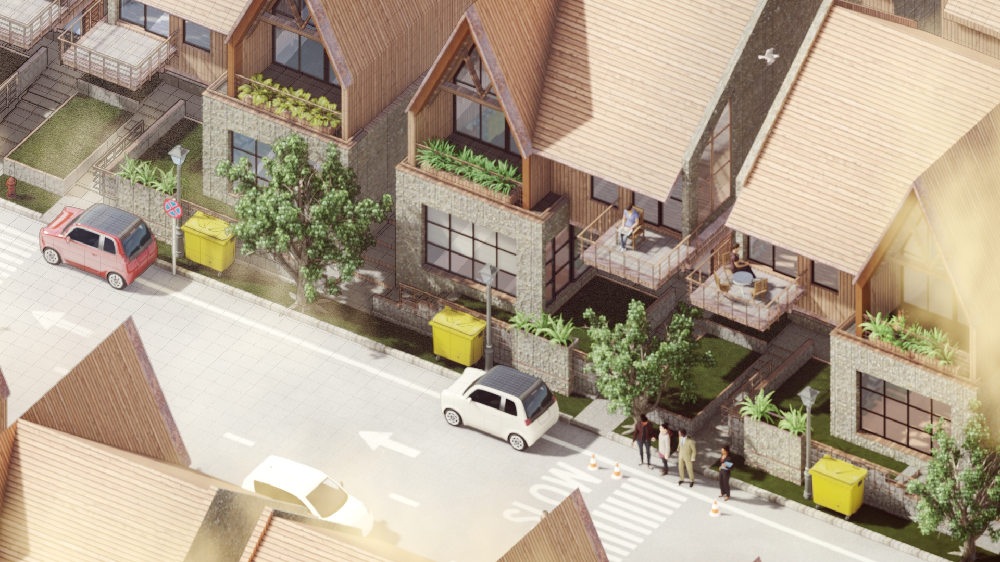
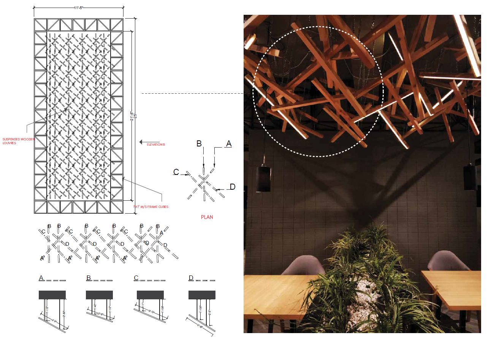
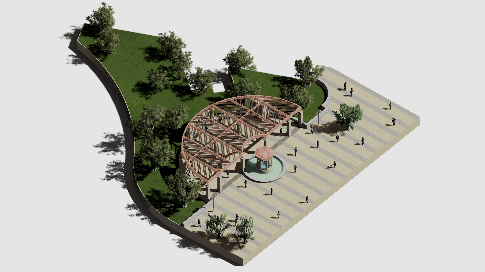
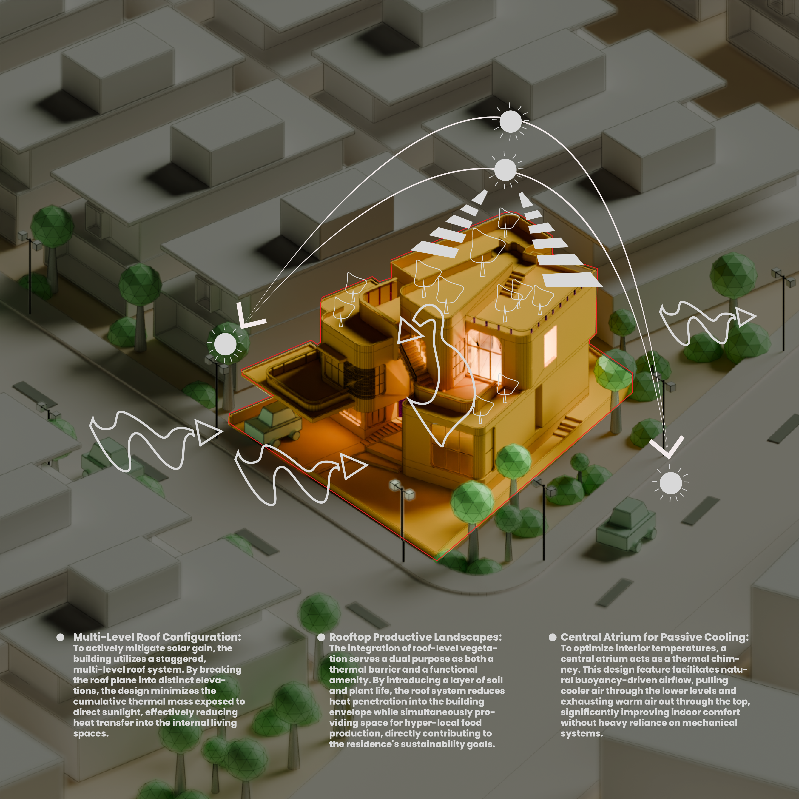
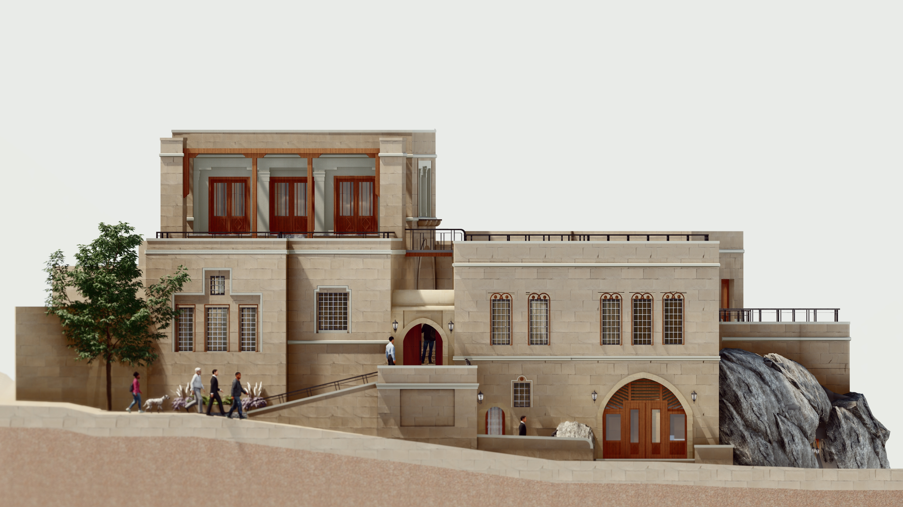
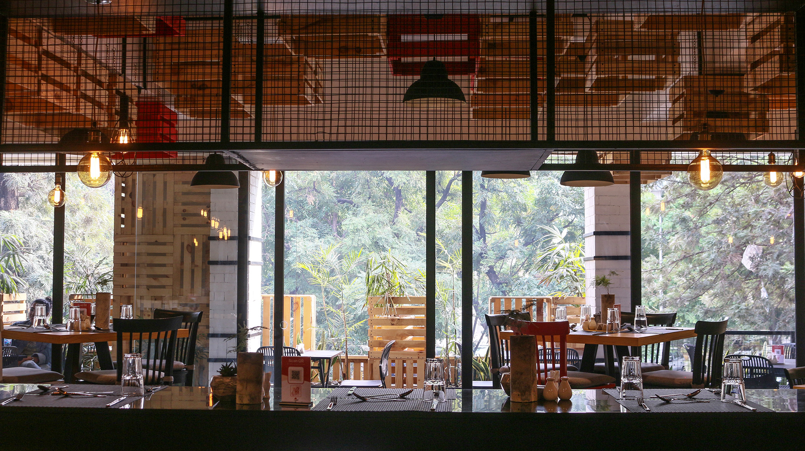
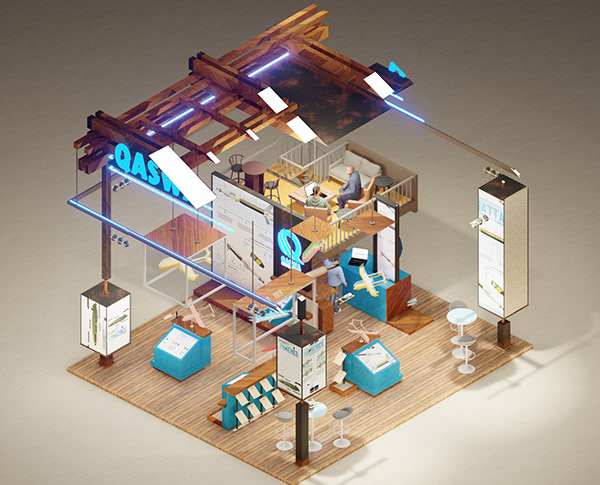

Kahramanmaraş Meydan
Reimagining the historic Meydan area through a balanced framework of restorative urban planning and precision 3D architectural visualization.

The Core-munal
Addressing regional housing shortages in Maseru through neighborhood production modules and functional core architecture engineered to empower rural-urban migrations.

Hill House
A contemporary alpine residential concept highlighting contextual materiality, highly articulated solar profiles, and smooth programmatic spatial transitions.

BR Restaurant
A tripartite interior plan using custom spatial elements like an acoustic wooden nest installation balanced with natural stone aggregates, textured plasters, and minimal metal frame configurations.

Pergola Pavilion
An empirical research prototype evaluating heavy structural timber framing, daylight filtering mechanisms, and rhythmic architectural shadow articulation.

The AJ House
A minimalist volume designed around natural micro-climates, focusing on fluid paths and clean structural geometry to create unified domestic spaces.

UCHR Hotel
High-fidelity site renderings evaluating context-sensitive stone architectural interventions within the historic, protected topographies of Cappadocia.

DIY Eatery
Grounded in social and environmental sustainability, the proposed interior for the DIY Eatery embraces a cradle-to-cradle design methodology utilizing reclaimed timber elements.

Qaswa Exhibition
A tactical display workspace built for aerospace exhibitions. The program optimizes high-impact human circulation patterns alongside physical scale modeling, holograms, and dynamic media interfaces.